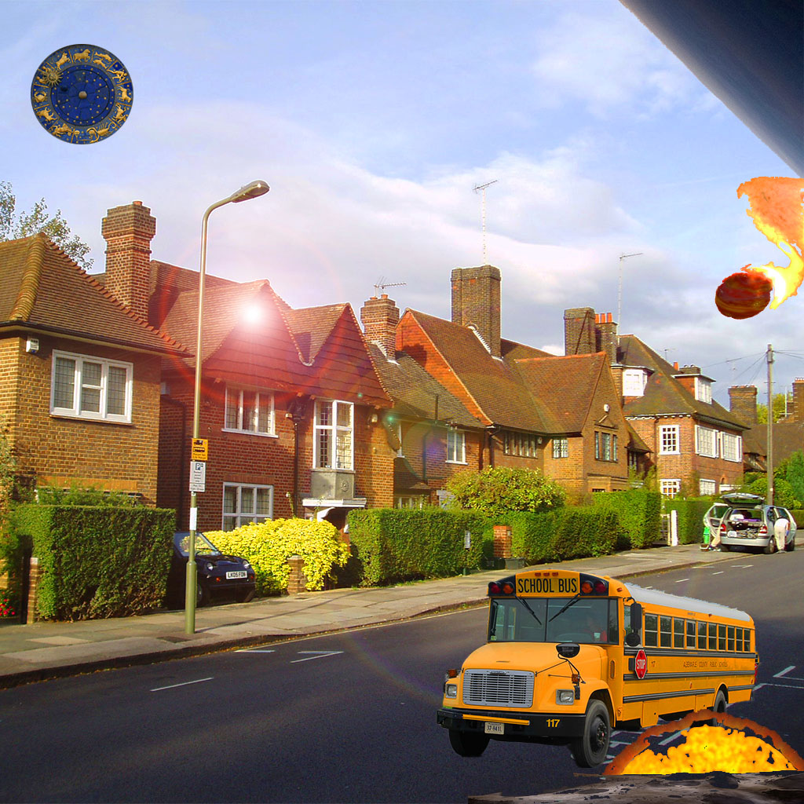

Penny lives a suburban town named Astroland. It is a place where everyone is defined by their sun in Zodiac signs and all the stereotypical character traits of the people who live in it are enhanced for comedic purposes or as a form of superpower or weakness.
